Java combina supporto del linguaggio e API di libreria: Thread e Runnable sono in java.lang; executor, lock espliciti e altre astrazioni sono in java.util.concurrent e relativi sottopacchetti. synchronized è un costrutto del linguaggio e usa il monitor intrinseco dell’oggetto scelto. Gli esempi eseguibili di questa sezione usano thread di piattaforma di Java 17; non vanno generalizzati alla gestione dei thread virtuali delle versioni successive.
Creare un oggetto Thread non lo rende già attivo. Runnable descrive un comportamento; Thread fornisce un contesto di esecuzione che si avvia con start. La distinzione tra oggetto, task e flusso di controllo evita di attribuire concorrenza a una normale chiamata di metodo.
Due modi principali per creare thread in Java:
Si estende la classe Thread e si sovrascrive il metodo run():
class MyThread extends Thread {
private final int id;
MyThread(int id) {
this.id = id;
}
public void run() {
System.out.println("Thread " + id + " avviato");
try {
Thread.sleep(5000);
} catch (InterruptedException cancelled) {
Thread.currentThread().interrupt();
return; // Politica di questo thread: termina, senza stampare done.
}
System.out.println("Thread " + id + " done");
}
}
// Uso:
MyThread t1 = new MyThread(1);
MyThread t2 = new MyThread(2);
t1.start();
t2.start();Si implementa l'interfaccia Runnable e si passa l'istanza a un thread:
class MyRunnable implements Runnable {
private String name;
MyRunnable(String name) {
this.name = name;
}
public void run() {
System.out.println(name + " avviato");
}
}
// Uso:
Thread t1 = new Thread(new MyRunnable("Thread-1"));
Thread t2 = new Thread(new MyRunnable("Thread-2"));
t1.start();
t2.start();Questo approccio e preferibile perche disaccoppia il comportamento attivo dalla gerarchia di classi, permettendo alla classe di estendere altre classi se necessario.
Chiamare direttamente run non è vietato: nell’esempio con new Thread(task) esegue il task sul chiamante, che non è necessariamente main, senza avviare t. Per un nuovo flusso di controllo si usa start una sola volta. Il ritorno da start non implica che il task sia finito; join permette di attenderne la terminazione e può essere interrotto.

Scarica ThreadStartDemo.java · Java 17, sorgente verificato.
import java.util.concurrent.atomic.AtomicInteger;
import java.util.concurrent.atomic.AtomicReference;
/** Java 17 platform thread: a direct call and a started thread are different. */
public final class ThreadStartDemo {
private ThreadStartDemo() { }
private static void require(boolean condition, String message) {
if (!condition) throw new AssertionError(message);
}
public static void main(String[] args) throws InterruptedException {
Thread caller = Thread.currentThread();
AtomicReference<Thread> executedBy = new AtomicReference<>();
AtomicInteger executions = new AtomicInteger();
Runnable task = () -> {
executedBy.set(Thread.currentThread());
executions.incrementAndGet();
};
Thread t = new Thread(task, "demo-worker");
t.run(); // Deliberate direct call: still on the caller.
require(executedBy.get() == caller, "Direct run must use caller thread");
require(t.getState() == Thread.State.NEW, "Direct run does not start t");
System.out.println("run: caller thread; t is NEW");
t.start(); // The same task now executes on t.
t.join(); // Wait for t to finish; do not infer completion from start.
require(executedBy.get() == t, "Started task must execute on t");
require(t.getState() == Thread.State.TERMINATED, "Join returned after termination");
require(executions.get() == 2, "The task executed twice in this experiment");
System.out.println("start + join: worker thread; t is TERMINATED; executions = 2");
try {
t.start();
throw new AssertionError("A Thread cannot be started twice");
} catch (IllegalThreadStateException expected) {
System.out.println("second start: IllegalThreadStateException");
}
}
}
Compila con javac ThreadStartDemo.java, poi esegui java ThreadStartDemo. Le verifiche confrontano l’identità del thread che esegue il task, non soltanto il suo nome. Il task viene eseguito due volte perché il programma dimostra intenzionalmente sia la chiamata diretta sia l’avvio. Il secondo start sullo stesso oggetto fallisce anche dopo join.
Un task può terminare dopo un lavoro finito oppure servire richieste in un ciclo con una politica di arresto. Il tipo di ritorno void non impone un comportamento persistente. Quando l’esecuzione avviata da start esce da run, normalmente o per un’eccezione non gestita, il thread termina e non è riavviabile; per un nuovo avvio serve un nuovo Thread.
Il professor Ricci anticipa un esempio che sara sviluppato nella prossima lezione. L'idea e ordinare un vettore enorme usando quicksort, ma sfruttando tutti i core del processore. Nel main si genera un array di 400 milioni di elementi, si chiama Arrays.sort() (sequenziale) e si misura il tempo. La sfida e parallelizzare l'ordinamento.
Il professore usa l'esempio concreto dal repo labactivity03 per mostrare come si realizza una sezione critica in Java con il costrutto synchronized. Due thread, WorkerA e WorkerB, eseguono azioni cicliche. WorkerA esegue A1, A2, A3; WorkerB esegue B1, B2, B3. L'obiettivo e fare in modo che A2 e A3 (oppure A2 da sola) siano eseguite in mutua esclusione rispetto a B2 e B3.
synchronized(lock) acquisisce il monitor dell’oggetto specificato. Se lo possiede un altro thread, l’ingresso attende; se lo possiede già il chiamante, l’acquisizione è rientrante. Al rilascio i contendenti possono competere: non è garantito un ordine FIFO. L’attesa di ingresso non è il wait set usato da Object.wait e non si interrompe chiamando interrupt.
Synchronized assicura mutua esclusione rispetto agli accessi che usano lo stesso monitor e rilascio all’uscita, anche per eccezione. Il rilascio precede in happens-before una successiva acquisizione dello stesso monitor. Non protegge un accesso che usa un altro lock o nessun lock, e non rende atomica un’operazione più ampia che esce dal blocco.
Nel codice mostrato dal professore, i worker estendono una classe base Worker che fornisce metodi di utilita come waitSome() (attesa casuale). La struttura e:
// Idea: sezione critica con blocco synchronized su un oggetto condiviso
Object lock = new Object();
// Thread A
synchronized (lock) {
// A2: azione in sezione critica
// A3: azione in sezione critica
}
// Thread B
synchronized (lock) {
// B2: azione in sezione critica
// B3: azione in sezione critica
}Il professore sottolinea che questo e il modo "piu raw, piu semplice, piu basso livello" per realizzare una sezione critica. Nella pratica si usano astrazioni di piu alto livello, ma comprendere synchronized e fondamentale.
Il cuore del laboratorio e l'esempio del contatore condiviso. Il professore presenta una classe Counter con un campo int count e un metodo inc(). Due thread incrementano lo stesso contatore. Senza sincronizzazione, l'operazione count++ non e atomica: e una sequenza read-modify-write (leggi, incrementa, scrivi).
Due thread possono leggere lo stesso valore e riscrivere lo stesso incremento, perdendone uno. Con 100.000 incrementi per thread il risultato atteso è 200.000, ma senza sincronizzazione non è garantito. Può essere inferiore, può ripetersi uguale fra esecuzioni e può anche risultare corretto: un test che osserva 200.000 non dimostra thread safety.
Leggi, incrementa e scrivi è un modello didattico della read-modify-write, non una promessa su tre precise istruzioni macchina o su tutte le ottimizzazioni JVM. Un interleaving può perdere aggiornamenti. Synchronized protegge la sequenza rispetto agli altri accessi che rispettano lo stesso lock; rendere solo count volatile non rende atomico count++.
Il professore simula mentalmente lo scenario: se entrambi i thread leggono count=5 prima che uno dei due lo abbia scritto, entrambi scriveranno 6 invece di 7. Ecco un simulatore interattivo per visualizzare il fenomeno:
Una classe thread-safe mantiene il proprio contratto documentato anche con chiamate concorrenti, senza richiedere sincronizzazione esterna per le operazioni coperte da quel contratto. Non significa che qualsiasi sequenza di più chiamate sia atomica. ArrayList non è sincronizzata, ma non si può generalizzare a tutte le classi di java.util: esistono anche classi e wrapper sincronizzati.
Collections.synchronizedList protegge le singole operazioni, ma la sua documentazione richiede sincronizzazione sul wrapper durante l’iterazione. Anche un check-and-act composto da due chiamate sicure può richiedere un’operazione atomica dedicata. ConcurrentHashMap offre per esempio putIfAbsent per evitare una separazione fra controllo e inserimento.
Il professore mostra un'evoluzione: invece di un blocco synchronized esplicito, si puo dichiarare l'intero metodo come synchronized. In Java, scrivere:
public synchronized void inc() {
count++;
}equivale a:
public void inc() {
synchronized (this) {
count++;
}
}Per un metodo di istanza synchronized il monitor è this; per un metodo static synchronized è l’oggetto Class della classe che dichiara il metodo. Metodi di istanze diverse non condividono automaticamente il monitor. L’idioma monitor richiede che tutti gli accessi allo stato protetto rispettino una disciplina coerente, non semplicemente una parola chiave su qualche metodo.
public class Counter {
private int count = 0;
public void inc() { count++; }
public int get() { return count; }
}
// Uso concorrente: PERICOLOSO!
// count++ non atomico -> lost updatepublic class SafeCounter {
private int count = 0;
public synchronized void inc() { count++; }
public synchronized int get() { return count; }
}
// Uso concorrente: SICURO
// synchronized rende inc() e get() atomiciIn questo SafeCounter anche get usa lo stesso monitor per la visibilità. Una lettura int non si spezza in metà valore, ma senza la necessaria relazione di memoria potrebbe essere obsoleta. Altri progetti possono usare AtomicInteger o altre discipline coerenti: non è una regola che imponga synchronized a ogni getter. Due chiamate consecutive get e inc restano due operazioni distinte.
Oltre a synchronized, Java offre lock espliciti nel pacchetto java.util.concurrent.locks. Il professore presenta ReentrantLock e le sue varianti, sottolineando un aspetto critico: il lock va rilasciato esplicitamente, e per questo il pattern canonico prevede try/finally.
import java.util.concurrent.locks.ReentrantLock;
ReentrantLock lock = new ReentrantLock();
public void m() {
lock.lock(); // acquisisce il lock (si blocca se necessario)
try {
// sezione critica
} finally {
lock.unlock(); // rilasciato SEMPRE, anche in caso di eccezione
}
}Il professore elenca le varianti offerte da ReentrantLock:
| Metodo | Comportamento |
|---|---|
lock() | Attende l’acquisizione senza terminare per interrupt. Un’interruzione durante l’attesa non viene trasformata in InterruptedException; lo stato di interruzione rimane osservabile dopo l’acquisizione. |
lockInterruptibly() | Può lanciare InterruptedException per interruzione già presente o ricevuta durante l’attesa; in quel caso azzera lo stato e non acquisisce un nuovo possesso. |
tryLock() | Non attende: restituisce true se acquisisce, anche rientrando come proprietario attuale, altrimenti false. La variante senza timeout può superare altri contendenti anche con lock fair. |
tryLock(time, unit) | Può acquisire e restituire true, scadere restituendo false oppure essere interrotta con InterruptedException e stato azzerato. Il timeout non è un risultato booleano garantito in presenza di interruzione. |
A differenza di synchronized, con ReentrantLock e possibile dimenticare di rilasciare il lock (se si omette il finally). Un'eccezione nel corpo del blocco lascerebbe il lock perpetuamente acquisito, bloccando tutti gli altri thread. Il pattern try/finally e obbligatorio.
ReentrantLock non implementa AutoCloseable: try (var lock = new ReentrantLock()) non compila in Java 17. Un eventuale wrapper applicativo deve implementare esplicitamente quel contratto; var non aggiunge gestione automatica delle risorse. Nel pattern sopra l’acquisizione precede il try: si esegue unlock soltanto per un’acquisizione riuscita. Con acquisizioni rientranti occorre un rilascio per ciascun livello.
Scarica LockSemanticsDemo.java · Java 17, sorgente verificato.
import java.util.List;
import java.util.concurrent.CountDownLatch;
import java.util.concurrent.TimeUnit;
import java.util.concurrent.atomic.AtomicBoolean;
import java.util.concurrent.atomic.AtomicReference;
import java.util.concurrent.locks.ReentrantLock;
/** Controlled Java 17 lock experiment. Deadlines are test guards, not benchmarks. */
public final class LockSemanticsDemo {
private LockSemanticsDemo() { }
private static void require(boolean condition, String message) {
if (!condition) throw new AssertionError(message);
}
private static void joined(Thread worker) throws InterruptedException {
worker.join(5000);
require(!worker.isAlive(), "Worker deadline exceeded");
}
private static void runCase(String mode) throws Exception {
ReentrantLock lock = new ReentrantLock();
CountDownLatch ready = new CountDownLatch(1);
AtomicBoolean acquired = new AtomicBoolean();
AtomicBoolean caught = new AtomicBoolean();
AtomicBoolean interruptStatus = new AtomicBoolean();
AtomicReference<Throwable> failure = new AtomicReference<>();
Thread worker = new Thread(() -> {
ready.countDown();
try {
boolean owns;
switch (mode) {
case "lock": lock.lock(); owns = true; break;
case "interruptible": lock.lockInterruptibly(); owns = true; break;
case "try": owns = lock.tryLock(); break;
case "timeout": owns = lock.tryLock(10, TimeUnit.MILLISECONDS); break;
case "timed-interrupt": owns = lock.tryLock(1, TimeUnit.DAYS); break;
default: throw new AssertionError(mode);
}
if (owns) {
try {
acquired.set(true);
interruptStatus.set(Thread.currentThread().isInterrupted());
} finally { lock.unlock(); }
}
} catch (InterruptedException expected) {
caught.set(true);
interruptStatus.set(Thread.currentThread().isInterrupted());
} catch (Throwable error) { failure.set(error); }
}, "lock-experiment");
worker.setDaemon(true); // Failure guard only: every successful run joins.
lock.lock();
try {
worker.start();
require(ready.await(5, TimeUnit.SECONDS), "Worker did not start");
if (!mode.equals("try") && !mode.equals("timeout")) {
long deadline = System.nanoTime() + TimeUnit.SECONDS.toNanos(5);
while (!lock.hasQueuedThread(worker)) {
require(System.nanoTime() < deadline, "Worker did not queue for lock");
Thread.sleep(1);
}
worker.interrupt();
}
if (mode.equals("lock")) {
require(!acquired.get(), "Main still owns lock");
lock.unlock();
}
joined(worker);
if (failure.get() != null) throw new AssertionError(failure.get());
require(acquired.get() == mode.equals("lock"), "Acquisition outcome");
require(caught.get() == (mode.equals("interruptible") || mode.equals("timed-interrupt")), "Exception outcome");
require(interruptStatus.get() == mode.equals("lock"), "Interrupt status after acquisition/exception");
System.out.println(mode + "\t" + acquired + "\t" + caught + "\t" + interruptStatus);
} finally {
if (lock.isHeldByCurrentThread()) lock.unlock();
worker.interrupt();
joined(worker);
}
}
public static void main(String[] args) throws Exception {
require(!AutoCloseable.class.isAssignableFrom(ReentrantLock.class), "Standard ReentrantLock is not AutoCloseable");
ReentrantLock reentrant = new ReentrantLock();
reentrant.lock();
try {
require(reentrant.tryLock(), "Current owner may acquire again");
try { require(reentrant.getHoldCount() == 2, "Two holds require two releases"); }
finally { reentrant.unlock(); }
require(reentrant.getHoldCount() == 1, "One remaining hold");
} finally { reentrant.unlock(); }
require(!reentrant.isLocked(), "All holds released");
System.out.println("method\tacquired\tInterruptedException\tinterruptStatus");
for (String mode : List.of("lock", "interruptible", "try", "timeout", "timed-interrupt")) runCase(mode);
}
}
javac LockSemanticsDemo.java e java LockSemanticsDemo eseguono cinque casi controllati mentre il main possiede inizialmente il lock. Il programma verifica acquisizione, eccezione e stato di interruzione, più la rientranza. Le scadenze sono guardie dei test, non misure delle prestazioni. Fonti API: Thread, ReentrantLock, synchronizedList.
Il professore introduce un esempio piu complesso che illustra il pattern check-and-act e le sue insidie. Un BoundedCounter e un contatore con soglie minime e massime: se si tenta di incrementare oltre il massimo, lancia OverflowException; se si tenta di decrementare sotto il minimo, lancia UnderflowException.
Scarica BoundedCounter.java · Java 17, sorgente verificato.
/** Each operation is atomic; separate getVal + inc calls are not one operation. */
public final class BoundedCounter {
public static final class OverflowException extends IllegalStateException {
private static final long serialVersionUID = 1L;
}
public static final class UnderflowException extends IllegalStateException {
private static final long serialVersionUID = 1L;
}
private int val;
private final int min;
private final int max;
public BoundedCounter(int min, int max, int initial) {
if (min > max || initial < min || initial > max) {
throw new IllegalArgumentException("Require min <= initial <= max");
}
this.min = min;
this.max = max;
this.val = initial;
}
public synchronized void inc() {
if (val >= max) throw new OverflowException();
val++;
}
public synchronized void dec() {
if (val <= min) throw new UnderflowException();
val--;
}
public synchronized boolean tryInc() {
if (val >= max) return false;
val++;
return true;
}
public synchronized boolean tryDec() {
if (val <= min) return false;
val--;
return true;
}
public synchronized int getVal() {
return val;
}
}
Il sorgente completo valida min ≤ initial ≤ max. inc/dec possono lanciare le eccezioni definite nella classe; tryInc/tryDec combinano controllo e modifica restituendo false al limite, senza cambiare il valore. Il valore iniziale valido e tutte le operazioni protette mantengono min ≤ val ≤ max.
Il problema emerge quando due worker operano sullo stesso contatore:
Se il controllo e l’azione sono operazioni separate, un altro thread può modificare lo stato tra le due. Il problema non è inevitabile per ogni check-and-act: controllo e modifica possono essere racchiusi in una singola operazione atomica. Un metodo inc che ricontrolla il limite sotto lock mantiene l’invariante anche se un controllo esterno è ormai obsoleto; può però rifiutare l’operazione.
Proteggi l’intera operazione composta e tutti gli accessi al suo stato condiviso con una disciplina coerente, comprese le letture. Non basta sincronizzare due metodi separati, né occorre sincronizzare indiscriminatamente ogni metodo pubblico che non accede a quello stato.
La lezione confronta due strumenti di coordinazione: una barriera ciclica per fasi ripetute e un latch per un’apertura una tantum. Gli esempi editoriali sotto usano monitor intrinseci e sono compilabili in Java 17. Non implementano tutte le opzioni delle corrispondenti classi di libreria.
In ogni giro, N partecipanti chiamano await: l’ultimo arrivo completa quella generazione e rende possibile il ritorno normale degli altri. Non significa che i thread riprendano tutti simultaneamente. La barriera conta arrivi, non registra identità: il programma deve far partecipare correttamente il gruppo a ogni fase.
Il vecchio CyclicBarrierMonitor incrementava nArrived senza azzerarlo: superato N, ogni chiamata successiva passava subito. Non era ciclico. Anche azzerare il contatore senza distinguere le generazioni è insufficiente: un thread veloce può entrare nel giro nuovo prima che un waiter del giro precedente riprenda.

Ogni await conserva un riferimento alla propria Generation. L’ultimo arrivo pubblica una generazione nuova e notifica i waiter; chi si risveglia distingue così completamento del proprio giro, generazione rotta e semplice notifica senza completamento. L’indice restituito va da N−1 per il primo arrivo a 0 per l’ultimo.
Scarica CyclicBarrierMonitor.java · esempio editoriale Java 17.
import java.util.concurrent.BrokenBarrierException;
/** Teaching subset: fixed parties, interruptible await and reset; no timeout/action. */
public final class CyclicBarrierMonitor {
private static final class Generation {
boolean broken;
}
private final int parties;
private int remaining;
private Generation generation = new Generation();
public CyclicBarrierMonitor(int parties) {
if (parties <= 0) {
throw new IllegalArgumentException("Positive parties required");
}
this.parties = parties;
remaining = parties;
}
private void breakGeneration() {
generation.broken = true;
remaining = parties;
notifyAll(); // Called only while this monitor is owned.
}
public synchronized int await()
throws InterruptedException, BrokenBarrierException {
final Generation joined = generation;
if (joined.broken) throw new BrokenBarrierException();
if (Thread.interrupted()) {
breakGeneration();
throw new InterruptedException();
}
final int index = --remaining;
if (index == 0) {
remaining = parties;
generation = new Generation();
notifyAll();
return 0;
}
for (;;) {
try {
wait();
} catch (InterruptedException interrupted) {
if (joined == generation && !joined.broken) {
breakGeneration();
throw interrupted;
}
// Completion or a previous break won the race. Preserve the flag.
Thread.currentThread().interrupt();
}
if (joined.broken) throw new BrokenBarrierException();
if (joined != generation) return index;
// Notification alone (including a spurious wake) is not completion.
}
}
public synchronized boolean isBroken() {
return generation.broken;
}
/** Existing waiters fail; coordinate participating threads before reuse. */
public synchronized void reset() {
breakGeneration();
generation = new Generation();
remaining = parties;
}
}
Se un partecipante viene interrotto mentre la sua generazione è ancora attiva, la rompe: lui riceve InterruptedException e i peer ricevono BrokenBarrierException. I nuovi arrivi falliscono finché un coordinatore non esegue reset o non fornisce una nuova barriera. Se il giro era già stato completato prima che l’interruzione venga gestita, il vecchio await può ritornare normalmente conservando lo stato di interruzione: non deve rompere il giro nuovo.
Reset rompe la vecchia generazione e ne crea una nuova; non sposta automaticamente i waiter nel giro nuovo e non ripara il lavoro applicativo. Occorre coordinare il gruppo prima del riuso. L’esempio non include timeout né barrier action; per queste opzioni si usa la classe di libreria. L’ingresso nel monitor synchronized non è interrompibile: il controllo dello stato di interruzione avviene dopo l’acquisizione.
Safety: nessun await ritorna normalmente dal giro g prima di N arrivi in g. Liveness: se tutti arrivano, la generazione non si rompe e i thread continuano a essere schedulati, tutti gli await di quel giro possono completare. Se un partecipante non arriva mai, la barriera non promette progresso; l’ultimo arrivato non deve necessariamente sospendersi.
Con ReentrantLock e Condition: restano necessari contatore, generazioni e politica di fallimento. Le attese usano Condition.await e le notifiche signalAll sotto il lock associato. Chiamare Object.notifyAll sulla Condition riguarda invece il suo monitor intrinseco: senza possederlo lancia IllegalMonitorStateException, e anche possedendolo non segnala la coda della Condition. Non è una sostituzione equivalente.
CountDownLatchMonitor attende che countDown porti il conteggio a zero. Il conteggio iniziale può essere zero, ma non negativo; dopo l’apertura resta zero e altri countDown non lo riducono ulteriormente. Await non consuma permessi e non decrementa il conteggio. Il numero dei waiter non deve coincidere con il conteggio iniziale.
Scarica CountDownLatchMonitor.java · esempio editoriale Java 17.
/** Teaching subset: one-shot latch with untimed interruptible await. */
public final class CountDownLatchMonitor {
private int count;
public CountDownLatchMonitor(int count) {
if (count < 0) {
throw new IllegalArgumentException("Nonnegative count required");
}
this.count = count;
}
public synchronized void await() throws InterruptedException {
if (Thread.interrupted()) throw new InterruptedException();
while (count > 0) wait();
}
public synchronized void countDown() {
if (count > 0) {
count--;
if (count == 0) notifyAll();
}
}
public synchronized int getCount() {
return count;
}
}
Interrompere un waiter lo fa uscire con InterruptedException e stato azzerato, ma non decrementa né rompe il latch per gli altri. Il controllo iniziale dell’interruzione si applica anche al latch già aperto. La condizione resta in un ciclo: una notifica, da sola, non significa che count sia zero.
Compila i file con javac CyclicBarrierMonitor.java CountDownLatchMonitor.java. Sono componenti da usare nei propri worker, non applicazioni con main. Riferimenti Java 17: CyclicBarrier e CountDownLatch. Le prove includono il difetto del vecchio sorgente, più giri della versione corretta, rientro veloce, interruzioni, reset e latch aperto.
La barriera separa fasi ripetute di un gruppo; il latch attende un insieme di eventi conteggiati una volta sola. CountDown non prova da sé che un servizio sia partito correttamente: è il protocollo applicativo a stabilire quando decrementare e come comunicare eventuali errori.
Il professor Ricci apre la lezione introducendo il concetto fondamentale del design task-oriented: quando progettiamo un sistema concorrente, dobbiamo iniziare dall'analisi del problema per identificare i task — unita di lavoro ben definite, con un inizio e una fine — che compongono il sistema. Questa analisi puo partire dai dati (data-driven) o dalle funzionalita (function-driven).
Un task non e un thread. Un task e un'unita di lavoro logica, astratta, indipendente. Il thread e il veicolo che esegue il task. Separare i due concetti e il primo passo verso un buon design concorrente.
L'analisi procede rispondendo a tre domande fondamentali:
Il professore sottolinea l'importanza di adottare un approccio limpido e lineare: esplicitare le cose, non nasconderle dietro astrazioni troppo sofisticate. La semplicita nel design paga sempre, soprattutto nei sistemi concorrenti dove la complessita intrinseca e gia elevata.
Sull'Assignment 1: il docente sara disponibile come "coach". Non si tratta di ricevere soluzioni prefabbricate, ma di discutere insieme l'approccio. Se un gruppo arriva dicendo "non riesco a capire come fare una certa cosa", si puo discutere. Il vero obiettivo dell'Assignment e fare qualcosa di concreto, non banale, che permetta di discutere insieme durante il colloquio orale.
Il pattern Division of Labor, noto anche come strategia del divide-et-impera, consiste nel:
Il risultato di una buona analisi task-oriented e un'organizzazione del programma piu semplice, che facilita il recovery da errori (i task sono confini naturali per le transazioni) e promuove naturalmente la concorrenza.
Il professor Ricci introduce il Executor Framework di Java (java.util.concurrent, JDK 5.0) come l'astrazione principale per il task-oriented programming. Il framework disaccoppia la sottomissione di un task dalla sua esecuzione.
public interface Executor {
void execute(Runnable task);
}Questa interfaccia semplice e il cuore del framework. Invece di creare un thread per ogni task (one-thread-per-task), si sottomette il task a un executor che decide quando, dove e come eseguirlo secondo una specifica execution policy.
Una execution policy specifica:
La classe factory Executors fornisce diverse implementazioni pronte:
| Metodo factory | Comportamento |
|---|---|
newFixedThreadPool(n) | Pool di dimensione fissa: mantiene n thread, li riusa per i task successivi |
newCachedThreadPool() | Pool flessibile: thread inattivi vengono terminati dopo 60s, se ne creano di nuovi se serve |
newSingleThreadExecutor() | Un singolo worker thread, task in coda FIFO |
newScheduledThreadPool(n) | Pool per task con ritardo o periodici |
Il docente mostra un esempio concreto di web server che usa un fixed thread pool al posto del pattern one-thread-per-task:
class TaskExecutionWebServer {
private static final int NTHREADS
= Runtime.getRuntime().availableProcessors() + 1;
private static final Executor exec =
Executors.newFixedThreadPool(NTHREADS);
public static void main(String[] args) throws IOException {
ServerSocket socket = new ServerSocket(80);
while (true) {
Socket connection = socket.accept();
exec.execute(() -> {
handleRequest(connection);
});
}
}
}Il docente sottolinea: "Eseguire i task in modo sequenziale e come il SingleThreadWebServer: poor performance, poor responsiveness, poor resource usage. Con un thread per task si migliora tutto, ma si crea il problema della stabilita sotto carico pesante." Il thread pool e il punto di equilibrio.
Rispetto alla creazione esplicita di thread per ogni task (one-thread-per-task), l'approccio pool-based offre:
Il professore sottolinea anche un avvertimento importante: nel framework Executor, i task devono essere indipendenti. Un task non dovrebbe aspettare un altro task, perche bloccando un task si blocca anche il thread fisico che lo esegue, aprendo la possibilita a deadlock.
I task nell'Executor Framework sono unita di lavoro ben definite che iniziano e terminano. Non sono loop infiniti (come potrebbero essere thread, agenti o processi). Questa differenza e cruciale: un task compute-area termina; un thread server no.
Prima di immergersi completamente nell'asincrono, il professore dedica una parte importante della lezione al task-oriented programming in Java, che fa da ponte tra il mondo dei thread e quello degli event loop.
Un task è un'unità di lavoro astratta, discreta e indipendente, disaccoppiata dal concetto di thread. L'idea è di adottare una strategia divide-et-impera: identificare i confini dei task (attività indipendenti, che non dipendono dallo stato/risultato di altri task) e scegliere una execution policy adeguata.
Le tre strategie di esecuzione tradizionali sono:
| Strategia | Descrizione | Pro | Contro |
|---|---|---|---|
| Sequenziale | Un singolo thread serve le richieste una dopo l'altra | Semplice, nessuna concorrenza | Throughput e reattività bassissimi |
| Thread-per-task | Un nuovo thread per ogni task | Semplice, migliora throughput | Overhead di creazione, consumo risorse, instabilità |
| Executor con pool | Thread pool dimensionato sulle risorse disponibili | Stabile, efficiente, separa logica da fisica | Richiede attenzione a deadlock e blocking |
Le slide di laboratorio ripropongono lo stesso esempio del TaskExecutionWebServer con fixed thread pool mostrato sopra.
Il thread pool segue il pattern producer-consumer: i produttori sono le attività che inviano task, i consumatori sono i thread del pool che li eseguono. I thread del pool eseguono un ciclo implicito: prendi il prossimo task dalla coda, eseguilo, torna in attesa.
Il professore mette in guardia da un pericolo subdolo:
Se i task all'interno del pool usano una barriera o attendono il completamento di altri task, e il pool ha un numero limitato di thread, si può verificare un deadlock: tutti i thread del pool sono bloccati in attesa, e nessuno può eseguire i task che sbloccherebbero la situazione. La soluzione "sbagliata" ma immediata è creare un pool con tanti thread quanti sono i task. La soluzione corretta è ripensare la struttura dei task per evitare attese bloccanti all'interno del pool.
Non tutti i task sono di tipo fire-and-forget (Runnable). Spesso un task deve restituire un risultato. Per questo l'Executor Framework introduce due interfacce complementari: Callable<V> e Future<V>.
Simile a Runnable ma con due differenze fondamentali: il metodo si chiama call() invece di run(), e puo restituire un valore oltre a poter lanciare eccezioni.
public interface Callable<V> {
V call() throws Exception;
}Un Future<V> rappresenta il risultato di un calcolo asincrono. Il professore spiega che e un contenitore che sara valorizzato nel tempo, una sorta di promessa di un risultato futuro.
public interface Future<V> {
boolean cancel(boolean mayInterruptIfRunning);
boolean isCancelled();
boolean isDone();
V get() throws InterruptedException, ExecutionException,
CancellationException();
V get(long timeout, TimeUnit unit) throws ...;
}Il docente accenna a un dibattito interessante: tecnicamente le Future non sono "funzionali" perche introducono tempo e non-determinismo. Un collega (Viroli) sostiene che con le monadi si possa conciliare il tutto, ma il professore preferisce rimanere su una spiegazione pragmatica.
La differenza tra execute(Runnable) e submit(Callable) e la seguente:
// Esegue un task senza risultato
executor.execute(runnableTask);
// Sottomette un task con risultato e restituisce un Future
Future<Integer> future = executor.submit(callableTask);
Integer result = future.get(); // bloccante finche il task non completafuture.get() e bloccante: il thread chiamante si sospende finche il task non ha prodotto il risultato. Questo e il punto in cui la concorrenza si riconcilia con la sequenzialita.
Il professore presenta il classico problema del calcolo di un integrale definito per approssimazione trapezoidale:
// ComputeAreaTask: calcola l'area di un singolo trapezio
class ComputeAreaTask implements Callable<Double> {
private final double x0, delta;
private final Function<Double,Double> f;
// costruttore...
public Double call() {
return (f.apply(x0) + f.apply(x0 + delta)) * delta / 2.0;
}
}
// Master: scompone l'intervallo e colleziona i risultati
List<Future<Double>> futures = new ArrayList<>();
for (double x = a; x < b; x += delta) {
futures.add(executor.submit(new ComputeAreaTask(x, delta, f)));
}
double totale = 0.0;
for (Future<Double> f : futures) {
totale += f.get(); // si blocca finche il task non e pronto
}Il docente sottolinea che il master non si sospende subito: sottomette tutti i task, colleziona i future, e solo dopo chiama get() su ciascuno. In questo modo i task possono essere eseguiti concorrentemente mentre il master continua a preparare i task successivi.
L'esempio del PrimeGenerator mostra come implementare la cancellazione cooperativa usando un flag volatile:
public class PrimeGenerator implements Runnable {
private final List<BigInteger> primes = new ArrayList<>();
private volatile boolean cancelled;
public void run() {
BigInteger p = BigInteger.ONE;
while (!cancelled) {
p = p.nextProbablePrime();
synchronized (this) { primes.add(p); }
}
}
public void cancel() { cancelled = true; }
public synchronized List<BigInteger> get() {
return new ArrayList<>(primes);
}
}
// Uso: richiedi lo stop dopo circa un secondo e attendi l'uscita.
List<BigInteger> aSecondOfPrimes() throws InterruptedException {
PrimeGenerator gen = new PrimeGenerator();
Thread worker = new Thread(gen);
worker.start();
try { SECONDS.sleep(1); } finally { gen.cancel(); }
worker.join();
return gen.get();
}Il secondo è il momento della richiesta, non un limite garantito alla durata: nextProbablePrime() deve finire prima del prossimo controllo del flag. Qui il risultato viene restituito solo dopo join(). Se il chiamante è interrotto durante sleep o join, il metodo propaga l’eccezione: lo stop è stato richiesto, ma non si garantisce di aver atteso l’uscita del worker. La lista può ancora ricevere l’ultimo valore dopo la richiesta di cancellazione.
Un flag non sblocca una BlockingQueue.put() sospesa su una coda piena. Questo produttore usa invece interrupt(): l’operazione è interrompibile e il catch termina il thread che possiede la politica di cancellazione. Si aggiorna p a ogni iterazione; senza quell’assegnamento il produttore inserirebbe sempre 2. I valori già inseriti restano nella coda.
Scarica PrimeProducer.java · Java 17, sorgente completo.
import java.math.BigInteger;
import java.util.Objects;
import java.util.concurrent.BlockingQueue;
/** One producer thread; cancellation does not discard values already queued. */
public final class PrimeProducer extends Thread {
private final BlockingQueue<BigInteger> queue;
public PrimeProducer(BlockingQueue<BigInteger> queue) {
this.queue = Objects.requireNonNull(queue);
}
@Override
public void run() {
BigInteger p = BigInteger.ONE;
try {
while (!isInterrupted()) {
p = p.nextProbablePrime();
queue.put(p);
}
} catch (InterruptedException cancelled) {
// This thread owns the cancellation policy: exit, do not retry put.
}
}
public void cancel() {
interrupt();
}
}
L'interfaccia ExecutorService estende Executor aggiungendo il controllo del ciclo di vita e il supporto per task con risultato. Ecco la gerarchia:

Un task che produce un risultato si definisce tramite l'interfaccia Callable<V> (che ha V call() throws Exception invece di void run()) e viene sottomesso con submit(), che restituisce un oggetto Future<V>.
// Frammento in un metodo che propaga InterruptedException
// ed ExecutionException; il pool appartiene a questo metodo.
ExecutorService exec = Executors.newFixedThreadPool(4);
Future<Integer> future = null;
try {
future = exec.submit(() -> 42);
// ... altro lavoro concorrente ...
Integer risultato = future.get();
} finally {
if (future != null && !future.isDone()) future.cancel(true);
exec.shutdown();
}La chiusura viene richiesta anche se get fallisce o il chiamante viene interrotto. Il finally non attende la terminazione del pool e non può forzare un task non cooperativo. Per attendere si usa il metodo descritto sotto.
A livello dell’API, il ciclo di vita si può riassumere in tre fasi concettuali; non sono gli stati Thread.State dei singoli worker:
shutdown() lascia eseguire quelli già accettati, anche in coda; shutdownNow() impedisce l’avvio di quelli in attesa, li restituisce e tenta di fermare quelli attivi;awaitTermination(timeout, unit) non avvia lo shutdown: dopo averlo richiesto, attende la terminazione e restituisce true, oppure false se scade il timeout. Se il chiamante è interrotto, lancia InterruptedException. Né shutdown né shutdownNow attendono automaticamente.
La cancellazione di un'attività concorrente segue un approccio cooperativo, non asincrono/preemptive. In Java, il meccanismo principale è l'interruption:
// Pattern di cancellazione cooperativa (dalle slide)
public class PrimeGenerator implements Runnable {
private volatile boolean cancelled;
public void run() {
BigInteger p = BigInteger.ONE;
while (!cancelled) {
p = p.nextProbablePrime();
// ... elaborazione ...
}
}
public void cancel() { cancelled = true; }
}Il flag volatile stabilisce una relazione di visibilità tra scrittura e successive letture; non garantisce che il worker venga subito schedulato o che una computazione finisca entro un tempo massimo. interrupt() è una richiesta, non uno stop forzato. Se il thread destinatario è in wait(), sleep() o join(), riceve InterruptedException con stato di interruzione azzerato. Nel caso di Object.wait deve prima riacquisire il monitor. L’attesa per entrare in un blocco synchronized non è invece interrompibile.
L’esperimento scaricabile usa un vero ThreadPoolExecutor con un worker: il primo task resta su un latch, il secondo è in coda. Nei due scenari cancel si cancella il Future del primo task e si chiama anche shutdown. Il primo ignora deliberatamente l’interruzione finché il driver non apre il latch, per rendere osservabile la distinzione: non è una politica da copiare nel codice applicativo. Ogni scenario rilascia il task e attende il pool nel finally.
| Operazione | Future done | Corpo uscito | Pool terminato | Interrupt osservato |
|---|---|---|---|---|
shutdown | no | no | no | no |
shutdownNow | no | no | no | sì |
cancel(true) | sì | no | no | sì |
cancel(false) | sì | no | no | no |
In questo ThreadPoolExecutor, shutdownNow restituisce il FutureTask in coda senza cancellarne automaticamente il Future: il driver lo cancella esplicitamente per completarne la gestione. Nei casi cancel, get() lancia già CancellationException mentre il corpo del task è ancora attivo. Con cancel(false) il FutureTask può essere cancellato anche se il corpo è iniziato, senza interromperne il thread: non assumere lo stesso esito per qualsiasi implementazione di Future. Dopo l’apertura del latch, il task in coda viene eseguito nei casi shutdown e cancel, ma non dopo shutdownNow; in tutti e quattro i casi il pool infine termina.
Scarica ExecutorLifecycleDemo.java · Java 17, sorgente completo.
import java.util.List;
import java.util.concurrent.Callable;
import java.util.concurrent.CancellationException;
import java.util.concurrent.CountDownLatch;
import java.util.concurrent.Future;
import java.util.concurrent.LinkedBlockingQueue;
import java.util.concurrent.RejectedExecutionException;
import java.util.concurrent.ThreadPoolExecutor;
import java.util.concurrent.TimeUnit;
import java.util.concurrent.atomic.AtomicBoolean;
/** Java 17. A controlled experiment, not a production cancellation policy. */
public final class ExecutorLifecycleDemo {
private ExecutorLifecycleDemo() { }
private static void require(boolean condition, String message) {
if (!condition) throw new AssertionError(message);
}
private static void await(CountDownLatch latch) throws InterruptedException {
require(latch.await(5, TimeUnit.SECONDS), "Latch deadline exceeded");
}
private static final class HeldTask implements Callable<Integer> {
final CountDownLatch started = new CountDownLatch(1);
final CountDownLatch release = new CountDownLatch(1);
final CountDownLatch interrupted = new CountDownLatch(1);
final CountDownLatch exited = new CountDownLatch(1);
@Override
public Integer call() {
started.countDown();
try {
for (;;) {
try {
release.await();
return 42;
} catch (InterruptedException observed) {
interrupted.countDown();
// DELIBERATE for this experiment: do not exit yet.
// The driver always opens release in finally.
}
}
} finally {
exited.countDown();
}
}
}
private static ThreadPoolExecutor pool() {
return new ThreadPoolExecutor(1, 1, 0, TimeUnit.SECONDS,
new LinkedBlockingQueue<>(), job -> {
Thread worker = new Thread(job, "executor-experiment");
// Failure guard only; normal completion is joined below.
worker.setDaemon(true);
return worker;
});
}
private static void runCase(String mode) throws Exception {
ThreadPoolExecutor executor = pool();
HeldTask task = new HeldTask();
AtomicBoolean queuedRan = new AtomicBoolean();
Future<Integer> active = null;
Future<Integer> queued = null;
try {
active = executor.submit(task);
await(task.started);
queued = executor.submit(() -> {
queuedRan.set(true);
return 7;
});
require(executor.getQueue().size() == 1, "Second task must be queued");
List<Runnable> removed = List.of();
boolean cancel = mode.startsWith("cancel");
boolean interrupt = mode.equals("shutdownNow") || mode.equals("cancel(true)");
if (cancel) {
require(active.cancel(interrupt), "Concrete running FutureTask accepts cancellation");
executor.shutdown();
} else if (mode.equals("shutdownNow")) {
removed = executor.shutdownNow();
} else {
executor.shutdown();
}
if (interrupt) await(task.interrupted);
require(executor.isShutdown(), "Shutdown initiated");
require(!executor.isTerminated(), "Held task body has not exited");
require(!executor.awaitTermination(1, TimeUnit.MILLISECONDS), "Timeout is not termination");
require(task.exited.getCount() == 1, "Body still held");
require(active.isDone() == cancel && active.isCancelled() == cancel, "Future state");
require(!queued.isDone() && !queuedRan.get(), "Queued task not run or cancelled");
require((task.interrupted.getCount() == 0) == interrupt, "Interrupt observation");
require(removed.size() == (mode.equals("shutdownNow") ? 1 : 0), "Removed count");
if (!removed.isEmpty()) require(removed.get(0) == queued, "Returned queued FutureTask");
try {
executor.submit(() -> 99);
throw new AssertionError("Must reject new submissions");
} catch (RejectedExecutionException expected) {
// All four cases have initiated shutdown.
}
if (cancel) {
try {
active.get();
throw new AssertionError("Cancelled Future must not return a value");
} catch (CancellationException expected) {
// This says nothing about the task body's exit.
}
}
System.out.println(String.join("\t", mode,
Boolean.toString(active.isDone()),
Boolean.toString(active.isCancelled()),
Boolean.toString(task.exited.getCount() == 0),
Boolean.toString(executor.isTerminated()),
Integer.toString(removed.size()),
Boolean.toString(queued.isDone()),
Boolean.toString(task.interrupted.getCount() == 0)));
// shutdownNow returned this pending Future without cancelling it.
if (!removed.isEmpty()) require(queued.cancel(false), "Explicit pending Future cleanup");
task.release.countDown();
await(task.exited);
if (!cancel) require(active.get(5, TimeUnit.SECONDS) == 42, "Active result");
if (removed.isEmpty()) require(queued.get(5, TimeUnit.SECONDS) == 7, "Accepted queue drained");
require(executor.awaitTermination(5, TimeUnit.SECONDS), "Termination after release");
require(queuedRan.get() == removed.isEmpty(), "Queue execution matches shutdown mode");
} finally {
task.release.countDown();
if (active != null) active.cancel(true);
if (queued != null) queued.cancel(false);
executor.shutdownNow();
require(executor.awaitTermination(5, TimeUnit.SECONDS), "Cleanup terminated pool");
}
}
public static void main(String[] args) throws Exception {
System.out.println("case\tfutureDone\tfutureCancelled\tbodyExited\tpoolTerminated\treturnedQueued\tqueuedFutureDone\tinterruptObserved");
for (String mode : List.of("shutdown", "shutdownNow", "cancel(true)", "cancel(false)")) {
runCase(mode);
}
}
}
Riferimenti API, Java 17: ExecutorService, Future e Thread.interrupt. Queste osservazioni sono un esperimento ripetibile, non una verifica esaustiva di tutti gli scheduling o di tutti gli executor.
La differenza tra shutdown() (ordinato: esegue i task già accettati) e shutdownNow() (tenta di fermare quelli attivi e restituisce quelli non avviati) è un classico da esame. La poison pill è un protocollo alternativo per consumatori su coda: una sentinella segnala la fine. Occorre stabilire quando i produttori hanno finito e come ogni consumatore riceve il segnale, per esempio una sentinella per consumatore su una coda FIFO. Una sola sentinella non ferma automaticamente più consumatori e il suo inserimento può bloccarsi su una coda piena.
La lezione usa un cronometro MVC per distinguere due problemi: reattività della GUI e accesso concorrente allo stato. Sono proprietà diverse: proteggere il modello con un lock non rende reattivo un listener che non ritorna.
Il programma si chiama CronoMVCNotReactivePlusRace ed e l'esempio di come NON si fa. L'idea e semplice: un cronometro con pulsanti Start, Stop e Reset che conta i secondi in un text field.
Il frammento seguente mostra il blocco dell’EDT. Da solo non dimostra una data race: questa richiede accessi concorrenti incompatibili senza adeguata sincronizzazione. Se tutto lo stato fosse confinato all’EDT, la GUI potrebbe comunque bloccarsi pur senza quella race.
Il bug principale e nel controller: l'azione di start viene eseguita direttamente sull'Event Dispatch Thread (EDT), il thread di Swing che gestisce tutti gli eventi della GUI. Cosa succede?
// Frammento intenzionalmente errato: non eseguirlo nella GUI.
buttonStart.addActionListener(e -> {
started = true;
while (started) {
model.updateState();
display.setText(String.valueOf(model.getValue()));
}
});Occorre distinguere la modifica dello stato del componente dalla pittura sullo schermo:
setText() modifica lo stato testuale del componente durante la chiamata: non equivale a un invokeLater dell’intera operazione. Repaint e layout possono essere differiti.Un handler sull’EDT deve finire rapidamente. Può chiamare controller e modello per operazioni brevi, ma non deve contenere un ciclo lungo, sleep, attese su Future o join di worker. La separazione MVC non assegna automaticamente un thread a ogni ruolo.
La lezione chiama la versione corretta CronoMVCReactiveNonRaces. Il principio è separare il comportamento prolungato dall’handler GUI e definire chi può accedere allo stato. Le slide ammettono esplicitamente task brevi sull’EDT, compresi accessi ai modelli Swing; non impongono che qualsiasi metodo del controller o del modello venga eseguito su un altro thread.
Un agente separato è utile per comportamento prolungato o lavoro costoso, con pubblicazione dei risultati sull’EDT. Per un semplice contatore, un javax.swing.Timer può invece invocare brevi aggiornamenti sull’EDT: non serve un worker soltanto perché l’attività è periodica. I due esempi sotto mostrano entrambe le scelte.
Questa è una ricostruzione editoriale compilabile in Java 17, non il sorgente originale del laboratorio. Il tempo trascorso deriva da differenze di System.nanoTime(), non dal numero di tick: un refresh ritardato non perde secondi. Start ripetuto non riparte da zero; Stop conserva il tempo; Reset azzera mantenendo lo stato fermo/in esecuzione.

Il controller riceve i comandi sull’EDT e usa brevi metodi synchronized del modello. Un solo worker campiona uno snapshot immutabile e ne accoda la pubblicazione. Le sezioni critiche non includono chiamate Swing o attese; ogni comando cambia la versione, quindi un refresh precedente a Reset/Stop non può sovrascrivere la nuova vista. Accorpare i refresh evita l’accumulo di una callback per ogni tick quando l’EDT è occupato.
Scarica StopwatchModel.java · Java 17.
import java.util.Objects;
import java.util.function.LongSupplier;
/** Short monitor operations; no GUI calls, sleeping, I/O or callbacks to the EDT. */
public final class StopwatchModel {
public record Snapshot(long millis, boolean running, long revision) { }
private final LongSupplier nanoClock;
private long accumulated;
private long startedAt;
private long revision;
private boolean running;
public StopwatchModel() {
this(System::nanoTime);
}
public StopwatchModel(LongSupplier nanoClock) {
this.nanoClock = Objects.requireNonNull(nanoClock);
}
public synchronized void start() {
if (!running) {
startedAt = nanoClock.getAsLong();
running = true;
}
revision++;
}
public synchronized void stop() {
if (running) {
accumulated += nanoClock.getAsLong() - startedAt;
running = false;
}
revision++;
}
/** Reset to zero; preserve whether the stopwatch is running. */
public synchronized void reset() {
accumulated = 0;
if (running) startedAt = nanoClock.getAsLong();
revision++;
}
public synchronized Snapshot snapshot() {
long elapsed = accumulated + (running ? nanoClock.getAsLong() - startedAt : 0);
return new Snapshot(elapsed / 1_000_000, running, revision);
}
}
Scarica ConcurrentStopwatch.java · Java 17.
import java.awt.BorderLayout;
import java.awt.Color;
import java.awt.Font;
import java.awt.event.WindowAdapter;
import java.awt.event.WindowEvent;
import java.util.Locale;
import java.util.Objects;
import java.util.concurrent.ScheduledThreadPoolExecutor;
import java.util.concurrent.TimeUnit;
import java.util.concurrent.atomic.AtomicBoolean;
import java.util.function.Consumer;
import javax.swing.BorderFactory;
import javax.swing.JButton;
import javax.swing.JFrame;
import javax.swing.JLabel;
import javax.swing.JPanel;
import javax.swing.SwingConstants;
import javax.swing.SwingUtilities;
/** Java 17 editorial MVC example: one sampler, not a new thread per Start. */
public final class ConcurrentStopwatch {
private ConcurrentStopwatch() { }
static void requireEdt() {
if (!SwingUtilities.isEventDispatchThread()) {
throw new IllegalStateException("This operation belongs to the EDT");
}
}
static final class Controller {
private final StopwatchModel model;
private final Consumer<StopwatchModel.Snapshot> view;
private final ScheduledThreadPoolExecutor sampler;
private final AtomicBoolean refreshPending = new AtomicBoolean();
private boolean closed; // Accessed only by the EDT.
Controller(StopwatchModel model, Consumer<StopwatchModel.Snapshot> view,
long refreshMillis) {
requireEdt();
if (refreshMillis <= 0) throw new IllegalArgumentException("Positive refresh period required");
this.model = Objects.requireNonNull(model);
this.view = Objects.requireNonNull(view);
view.accept(model.snapshot());
sampler = new ScheduledThreadPoolExecutor(1,
job -> new Thread(job, "stopwatch-sampler"));
sampler.scheduleWithFixedDelay(this::sample, refreshMillis,
refreshMillis, TimeUnit.MILLISECONDS);
}
void start() {
requireEdt();
if (!closed) { model.start(); view.accept(model.snapshot()); }
}
void stop() {
requireEdt();
if (!closed) { model.stop(); view.accept(model.snapshot()); }
}
void reset() {
requireEdt();
if (!closed) { model.reset(); view.accept(model.snapshot()); }
}
void sample() {
// Coalesce refreshes: at most one queued refresh callback.
if (!refreshPending.compareAndSet(false, true)) return;
final StopwatchModel.Snapshot value = model.snapshot();
SwingUtilities.invokeLater(() -> {
requireEdt();
refreshPending.set(false);
// A queued old sample must not undo Stop/Reset/Start or close.
if (!closed && value.revision() == model.snapshot().revision()) {
view.accept(value);
}
});
}
void close() {
requireEdt();
if (!closed) {
closed = true;
model.stop();
sampler.shutdownNow();
}
}
boolean awaitClosed(long timeout, TimeUnit unit) throws InterruptedException {
if (SwingUtilities.isEventDispatchThread()) {
throw new IllegalStateException("Never await worker termination on the EDT");
}
return sampler.awaitTermination(timeout, unit);
}
}
static final class View {
final JPanel panel = new JPanel(new BorderLayout(12, 12));
final JLabel display = new JLabel("0.000 s", SwingConstants.CENTER);
final JLabel state = new JLabel("Fermo", SwingConstants.CENTER);
final JButton start = new JButton("Start");
final JButton stop = new JButton("Stop");
final JButton reset = new JButton("Reset");
View() {
requireEdt();
Color ivory = new Color(0xF3EFE3);
panel.setBackground(ivory);
panel.setBorder(BorderFactory.createEmptyBorder(24, 24, 24, 24));
display.setFont(new Font(Font.MONOSPACED, Font.PLAIN, 32));
display.setForeground(new Color(0x1546B8));
JPanel buttons = new JPanel();
buttons.setBackground(ivory);
buttons.add(start); buttons.add(stop); buttons.add(reset);
panel.add(state, BorderLayout.NORTH);
panel.add(display, BorderLayout.CENTER);
panel.add(buttons, BorderLayout.SOUTH);
}
void show(StopwatchModel.Snapshot value) {
requireEdt();
display.setText(String.format(Locale.ROOT, "%d.%03d s",
value.millis() / 1000, value.millis() % 1000));
state.setText(value.running() ? "In esecuzione" : "Fermo");
start.setEnabled(!value.running());
stop.setEnabled(value.running());
}
void bind(Controller controller) {
requireEdt();
start.addActionListener(event -> controller.start());
stop.addActionListener(event -> controller.stop());
reset.addActionListener(event -> controller.reset());
}
}
public static void main(String[] args) {
SwingUtilities.invokeLater(() -> {
View view = new View();
Controller controller = new Controller(new StopwatchModel(), view::show, 100);
view.bind(controller);
JFrame frame = new JFrame("Cronometro MVC · esempio editoriale");
frame.setDefaultCloseOperation(JFrame.DISPOSE_ON_CLOSE);
frame.setContentPane(view.panel);
frame.addWindowListener(new WindowAdapter() {
@Override public void windowClosing(WindowEvent event) { controller.close(); }
@Override public void windowClosed(WindowEvent event) { controller.close(); }
});
frame.pack();
frame.setLocationByPlatform(true);
frame.setVisible(true);
});
}
}
Scarica entrambi i file nella stessa cartella: javac StopwatchModel.java ConcurrentStopwatch.java, poi java ConcurrentStopwatch in un ambiente grafico. Chiudere la finestra invalida i refresh pendenti e arresta il sampler. L’EDT non attende la terminazione del worker; un test o un coordinatore esterno può usare awaitClosed fuori dall’EDT. Non si creano nuovi thread a ogni pressione di Start.
invokeLater() programma la callback sull’EDT senza aspettarne l’esecuzione, anche quando è chiamato dall’EDT stesso. Questo trasferisce l’esecuzione del callback, non rende thread-safe qualunque modello condiviso: lo snapshot deve essere acquisito e pubblicato correttamente. Una callback costosa bloccherebbe comunque la GUI.
invokeAndWait() attende la fine della callback e non va chiamato dall’EDT. Anche un worker può causare deadlock se lo chiama mentre trattiene un lock di cui l’EDT ha bisogno. Nel cronometro non è necessario: si pubblica dopo aver rilasciato il monitor.
Tre domande separate: dove viene eseguito il codice, come è protetto lo stato, e quanto a lungo può occupare quel thread? invokeLater risponde alla prima, non automaticamente alle altre due.
Riferimenti: EDT e task brevi, SwingUtilities, Java 17. Le verifiche dell’esempio includono una vera coda EDT: setText è osservabile prima che il task ritorni, mentre un invokeLater resta accodato finché quel task non finisce. Non si tratta di una simulazione del browser.
Il secondo esempio pratico e Sketch2, un programma GUI che illustra come gestire input asincrono da tastiera all'interno di un'architettura Model-View-Controller.
L'applicazione mostra un conteggio che viene aggiornato sia automaticamente (da un componente attivo che incrementa il valore periodicamente) sia manualmente (premendo il tasto I sulla tastiera). Il tasto R resetta il conteggio.
La sfida: la tastiera genera eventi in modo asincrono, indipendentemente dal ciclo di vita del programma. Come li integriamo nel MVC?
Nella variante editoriale SketchCounter, creazione della GUI, pulsanti, timer e azioni da tastiera sono tutti confinati all’EDT. Incrementare un long e aggiornare una label sono operazioni brevi: non richiedono un thread distinto né lock, purché nessun altro thread acceda a quel modello. Il timer conta callback eseguite, non secondi reali; se l’EDT è occupato, le notifiche possono essere ritardate e accorpate.
Scarica SketchCounter.java · Java 17.
import java.awt.BorderLayout;
import java.awt.Color;
import java.awt.Font;
import java.awt.event.ActionEvent;
import java.awt.event.KeyEvent;
import java.awt.event.WindowAdapter;
import java.awt.event.WindowEvent;
import javax.swing.AbstractAction;
import javax.swing.BorderFactory;
import javax.swing.JButton;
import javax.swing.JComponent;
import javax.swing.JFrame;
import javax.swing.JLabel;
import javax.swing.JPanel;
import javax.swing.KeyStroke;
import javax.swing.SwingConstants;
import javax.swing.SwingUtilities;
import javax.swing.Timer;
/** Small alternative to the active-agent example: everything is EDT-confined. */
public final class SketchCounter {
private SketchCounter() { }
static final class Controller {
private long count; // No other thread reads or writes this model.
private boolean closed;
final JPanel panel = new JPanel(new BorderLayout(12, 12));
final JLabel display = new JLabel("0", SwingConstants.CENTER);
final JButton increment = new JButton("+1 (I)");
final JButton reset = new JButton("Reset (R)");
final Timer timer;
Controller(int delayMillis) {
requireEdt();
if (delayMillis <= 0) throw new IllegalArgumentException("Positive timer delay required");
panel.setBackground(new Color(0xF3EFE3));
panel.setBorder(BorderFactory.createEmptyBorder(24, 24, 24, 24));
display.setFont(new Font(Font.MONOSPACED, Font.PLAIN, 32));
display.setForeground(new Color(0x1546B8));
JPanel buttons = new JPanel();
buttons.setBackground(panel.getBackground());
buttons.add(increment); buttons.add(reset);
panel.add(display, BorderLayout.CENTER);
panel.add(buttons, BorderLayout.SOUTH);
increment.addActionListener(event -> increment());
reset.addActionListener(event -> reset());
bind(KeyEvent.VK_I, "increment", this::increment);
bind(KeyEvent.VK_R, "reset", this::reset);
timer = new Timer(delayMillis, event -> increment());
timer.start();
}
private void bind(int key, String name, Runnable action) {
panel.getInputMap(JComponent.WHEN_IN_FOCUSED_WINDOW)
.put(KeyStroke.getKeyStroke(key, 0), name);
panel.getActionMap().put(name, new AbstractAction() {
private static final long serialVersionUID = 1L;
@Override public void actionPerformed(ActionEvent event) { action.run(); }
});
}
void increment() {
requireEdt();
if (!closed) { count++; display.setText(Long.toString(count)); }
}
void reset() {
requireEdt();
if (!closed) { count = 0; display.setText("0"); }
}
void close() {
requireEdt();
closed = true;
timer.stop();
}
}
static void requireEdt() {
if (!SwingUtilities.isEventDispatchThread()) {
throw new IllegalStateException("This model and view belong to the EDT");
}
}
public static void main(String[] args) {
SwingUtilities.invokeLater(() -> {
Controller controller = new Controller(1000);
JFrame frame = new JFrame("Input e timer · esempio editoriale");
frame.setDefaultCloseOperation(JFrame.DISPOSE_ON_CLOSE);
frame.setContentPane(controller.panel);
frame.addWindowListener(new WindowAdapter() {
@Override public void windowClosing(WindowEvent event) { controller.close(); }
@Override public void windowClosed(WindowEvent event) { controller.close(); }
});
frame.pack();
frame.setLocationByPlatform(true);
frame.setVisible(true);
});
}
}
Esegui javac SketchCounter.java e java SketchCounter in un ambiente grafico. I tasti I e R usano InputMap/ActionMap con WHEN_IN_FOCUSED_WINDOW: funzionano anche quando il focus è su un pulsante della finestra, senza affidarsi a un KeyListener sul JFrame. Le azioni sono disponibili anche tramite pulsanti. Alla chiusura il timer viene fermato e il controller ignora eventuali azioni già accodate.
Se l’incremento diventasse una computazione lunga, andrebbe delegata a un worker con una politica esplicita per stato, cancellazione e risultati, come nel percorso di pubblicazione sopra. Non basta spostare solo la chiamata che ridisegna la vista.
Questa variante non pretende di riprodurre l’architettura dell’agente attivo mostrata a lezione: illustra la diversa scelta del confinamento completo per lavoro breve. Fonti: Swing Timer e key bindings.
L'esercizio delle palle che rimbalzano e un caso studio di simulazione fisica concorrente. Il professore presenta un modello in cui delle palline si muovono in uno spazio bidimensionale, con:
friction factor)Ecco la logica di aggiornamento del modello fisico:
class Particle {
double x, y; // posizione
double vx, vy; // velocita
void update(double dt) {
// Applica attrito (decelerazione costante)
double friction = 0.98; // coefficiente
vx *= friction;
vy *= friction;
// Se la velocita e molto bassa, ferma del tutto
if (Math.abs(vx) < 0.01) vx = 0;
if (Math.abs(vy) < 0.01) vy = 0;
// Aggiorna posizione (cinematica)
x += vx * dt;
y += vy * dt;
// Boundary check: rimbalzo sui bordi
if (x < 0 || x > maxX) { vx = -vx; x = clamp(x, 0, maxX); }
if (y < 0 || y > maxY) { vy = -vy; y = clamp(y, 0, maxY); }
}
}Il professore sottolinea la separazione netta: le coordinate del modello sono logiche, non pixel. Sara la view a mappare le coordinate logiche nello spazio visivo (viewport). Questo e il pattern MVC applicato alla simulazione fisica.
Il professor Ricci introduce il Fork-Join Framework (Java SE 7) come evoluzione del pattern Executor per algoritmi che non hanno una topologia dei dati conosciuta a priori (es. strutture a grafo o ad albero).
Il problema: con un executor tradizionale, se un task Callable aspetta il risultato di un altro Callable, il thread che lo esegue rimane in attesa sprecando una risorsa. Fork-Join risolve questo con l'algoritmo di work-stealing.
// Esempio: somma degli elementi di un array (divide & conquer)
class SumTask extends RecursiveTask<Long> {
static final int THRESHOLD = 1000;
private final int[] array;
private final int lo, hi;
SumTask(int[] a, int lo, int hi) { this.array = a; this.lo = lo; this.hi = hi; }
protected Long compute() {
if (hi - lo < THRESHOLD) {
long sum = 0;
for (int i = lo; i < hi; i++) sum += array[i];
return sum;
}
int mid = (lo + hi) / 2;
SumTask left = new SumTask(array, lo, mid);
SumTask right = new SumTask(array, mid, hi);
left.fork(); // fork: avvia il task in parallelo
long rightResult = right.compute(); // compute: esegui direttamente
long leftResult = left.join(); // join: attendi il risultato
return leftResult + rightResult;
}
}
// Uso con ForkJoinPool
ForkJoinPool pool = new ForkJoinPool();
long total = pool.invoke(new SumTask(array, 0, array.length));Il work-stealing e il trucco: quando un thread si blocca in attesa del risultato di un fork, invece di rimanere idle, ruba (steal) un altro task dalla coda di un altro thread. Questo mantiene tutti i thread occupati e migliora il throughput complessivo.
Fork-Join realizza il pattern Map-Reduce (o divide-et-impera):
Il Fork-Join Framework e particolarmente efficace per algoritmi su strutture ricorsive come alberi, grafi, e per elaborazione di grandi volumi di dati con pattern map/reduce.
Il Fork-Join Framework (Java SE 7) estende il modello degli executor per gestire algoritmi map/reduce e divide-et-impera dove la topologia dei dati non è nota in anticipo. Le classi principali sono:
ForkJoinPool — executor specializzato che supporta il work-stealing: quando un thread è in attesa (join()), ruba lavoro dalla coda di un altro thread;ForkJoinTask con le sottoclassi RecursiveAction (senza risultato) e RecursiveTask (con risultato);fork() (lancia un subtask asincrono) e join() (attende il risultato).// Schema fork-join: merge sort parallelo (idea dalle slide)
class MergeSortTask extends RecursiveAction {
private int[] array;
private int lo, hi;
protected void compute() {
if (hi - lo < THRESHOLD) {
Arrays.sort(array, lo, hi);
} else {
int mid = (lo + hi) / 2;
var left = new MergeSortTask(array, lo, mid);
var right = new MergeSortTask(array, mid, hi);
left.fork(); // fork asincrono
right.compute();
left.join(); // attendi il risultato
merge(array, lo, mid, hi);
}
}
}Più recentemente, Java ha introdotto la Structured Concurrency (JEP 437, JDK 20+), che estende il modello fork-join con un approccio strutturato: se un task si divide in sottotask concorrenti, questi devono tornare tutti allo stesso blocco di codice (scope) del task padre.
Il codice d'esempio con StructuredTaskScope, identico nelle due lezioni, e riportato una sola volta qui sotto.
La Structured Concurrency risolve un problema di visibilità: con i thread tradizionali, un task avviato ma non completato può "fuggire" e rimanere in esecuzione anche dopo che il metodo chiamante è terminato. Con StructuredTaskScope, la durata dei sottotask è lessicalmente delimitata dal blocco try-with-resources.
Il professore accenna, nelle slide, al concetto di Structured Concurrency introdotto in JDK 20 (incubating). L'idea e semplice ma potente: se un task si divide in subtask concorrenti, tutti i subtask devono tornare allo stesso punto — il blocco di codice del task padre.
La classe StructuredTaskScope permette di strutturare un task come una famiglia di subtask concorrenti, coordinati come unita:
// Esempio: fetch parallelo di due sorgenti
Response handle() throws ExecutionException, InterruptedException {
try (var scope = new StructuredTaskScope.ShutdownOnFailure()) {
Future<String> user = scope.fork(() -> findUser());
Future<Integer> order = scope.fork(() -> fetchOrder());
scope.join(); // attendi entrambi i fork
scope.throwIfFailed(); // propaga errori
// Entrambi completati con successo
return new Response(user.resultNow(), order.resultNow());
} // scope si chiude: tutti i fork sono completati
}Il vantaggio: il ciclo di vita dei subtask e confinato al blocco try-with-resources. Non ci sono thread o task "orfani" che continuano dopo che il parent e terminato. La leggibilita e la manutenibilita sono simili al codice sequenziale.
Un task e un'unita di lavoro logica, astratta, con inizio e fine. Un thread e il veicolo fisico che esegue il task. Il task-oriented programming separa i due concetti: il programmatore definisce i task; l'executor decide come e quando eseguirli su thread.
Il listener trattiene l’EDT nel loop: altri eventi e le normali richieste di ridisegno non vengono serviti. setText può aver già modificato lo stato del componente senza che i nuovi pixel vengano dipinti. Non è un invokeLater dell’intera operazione; aggiungere sleep al loop non risolve il blocco.
Accoda un task nella coda degli eventi dell'EDT e ritorna immediatamente (asincrono). Il task verra eseguito dall'EDT quando sara il suo turno. E il meccanismo standard per aggiornare la GUI da un thread diverso dall'EDT.
Con la convenzione classica V = permessi disponibili non negativi e k ≥ 0: S.V ≥ 0 e S.V = k + #signal(S) − #wait(S). Si contano i rilasci e le acquisizioni nel momento di assegnazione del permesso, non tutte le chiamate iniziate né necessariamente i ritorni già osservati. Le rappresentazioni con contatore negativo o permessi riservati richiedono una contabilità esplicita; vedi il quiz sui monitor.
1. Mutua esclusione — una risorsa non condivisibile
2. Hold and wait — processi tengono risorse mentre ne richiedono altre
3. No preemption — le risorse non possono essere revocate
4. Circular wait — esiste un ciclo di attesa tra processi
Se una qualsiasi delle quattro e assente, il deadlock e impossibile.
Nel modello classico il semaforo conserva permessi; una condition variable non conserva notifiche per chiamanti futuri. Attendere su una condizione rilascia il monitor, mentre il risveglio richiede di riacquisirlo e ricontrollare il predicato. L’ordine dipende dall’astrazione: Object.notify sceglie arbitrariamente, non FIFO. Una Condition può avere garanzie specifiche; quelle create da ReentrantLock documentano segnalazione FIFO, distinta dalla successiva acquisizione del lock.
Con Signal & Continue il risveglio non assicura che il predicato sia ancora vero dopo la riacquisizione del monitor; in Java sono ammessi anche risvegli spuri. Il while deve ricontrollare il predicato sotto lo stesso lock. Da solo non corregge un predicato sbagliato, accessi non protetti o un protocollo di notifica incompleto.
I test esercitano scenari selezionati. Un model checker verifica una proprietà del modello rispetto agli stati/esecuzioni coperti, oppure produce un controesempio. Un’esplorazione esaustiva di un modello finito può stabilire quella proprietà nel modello, non l’assenza di qualsiasi bug nel programma reale. Ipotesi, astrazione e limiti di una verifica bounded fanno parte del risultato.
Dal momento in cui un processo P cerca di entrare in CS, un altro processo Q puo entrare al massimo k volte prima che P riesca ad entrare. In LTL: tryp → (¬CSq) W (CSq W ((¬CSq) W CSp)) per 1-bounded overtaking.